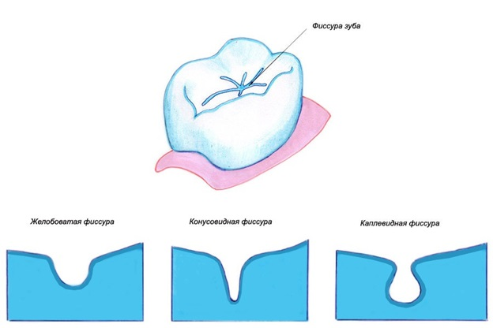
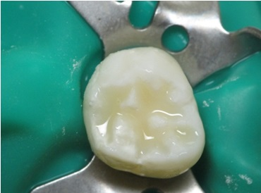
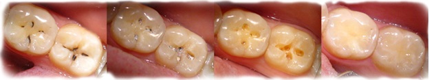

Стоматологи выяснили, что дети сильнее взрослых находятся под угрозой образования кариеса. Это обусловлено многими факторами — помимо ещё не окрепшей зубной эмали и слабого иммунитета, зубы ребёнка сильнее подвержены образованию кариозных болезней из-за сахара и всевозможных сладостей, которые так любят дети. Учитывая то, что в юном возрасте навык правильной и качественной чистки зубов сформирован ещё недостаточно хорошо (к тому же так нелюбим) частички сахаросодержащих продуктов остаются на зубах и, разлагаясь под действием микроорганизмов, образуют в полости рта кислоты, разрушающие эмаль. Особенно сильно подвержены опасности не резцы, а жевательные зубы: остатки пищи забиваются в фиссуры — желобки на поверхности зуба, откуда вычистить их ещё сложнее. Для предотвращения образования различных болезней, в современной медицине существует множество процедур, одна их которых называется герметизация фиссур.
Герметизация фиссур у детей – это процедура, при которой происходит заполнение фиссур зубов специальными средствами. В результате этого на эмали создаётся барьер, не позволяющий частичкам еды попадать в полости. Кроме этого, в составе материала для заполнения чаще всего присутствуют соединения фтора, которые укрепляют зубную эмаль и способствуют предотвращению повышенной чувствительности и стиранию.
Эта процедура рекомендована в первую очередь именно детям, поскольку основная её цель — это всё-таки профилактика кариеса, а не лечение или устранение его последствий. Поэтому имеет смысл герметизировать фиссуры у недавно появившихся, непораженных зубов. К тому же детские зубы особенно сильно подвержены риску, поскольку полноценная минерализация эмали ещё не сформировалась до конца. Лучшим временем для герметизации постоянных зубов является период сразу после их прорезывания — первые постоянные моляры (шестёрки) появляются приблизительно в возрасте 6–8 лет, премоляры (четвёртые и пятые) в 10–11, для вторых моляров (семёрок) эта цифра – 12– 14. Если есть глубокие фиссуры, процедура будет полезной и для молочных зубов.
Кроме положительных качеств у этого метода есть и отрицательные. Многие специалисты утверждают, что нанесение герметика на фиссуры растущих зубов способно препятствовать естественному формированию твёрдых тканей. К тому же существует мнение, что другой вид профилактики — фторирование, в комплексе с правильным и сбалансированным питанием (включающим достаточное количество необходимых материалов и витаминов) способен защитить от кариеса гораздо лучше. В любом случае, какой бы из методов ни был выбран, сначала необходимо посещение специалиста. Кроме подробной консультации, врач проведёт визуальный осмотр, а в некоторых случаях даже направит на посещение рентгена, лазерной люминесценции и фототермической радиометрии.
Если существуют явные признаки образования болезни — есть необходимость её лечения, и только после полного устранения всех симптомов можно задумываться о проведении процедуры. В противном случае разрушение тканей будет продолжаться, но под слоем герметика, что сделает лечение невозможным. Также не рекомендуется этот метод для ранее пломбированных зубов. Отсутствует необходимость в подобной профилактике и у людей со слабовыраженными, открытыми фиссурами.
После предварительной консультации со специалистом и осмотра, проводится профессиональная стоматологическая чистка с использованием специальных электрических инструментов и не содержащей фтора и масел пасты. Удаляется весь налёт и если есть необходимость — зубной камень. После того как поверхность стала чистой её необходимо промыть дистиллированной водой, а затем высушить. Для предотвращения попадания на обрабатываемую поверхность слюны, зубы ограничивают кусочками ваты. Следующий этап — покрытие зубов специальным клеевидным веществом, благодаря которому место герметизации выравнивается и становится шероховатым, что обеспечивает герметику более надёжное сцепление. Затем на зуб при помощи специального зонда наносится материал для герметизации и доводится до твёрдого состояния сушкой под специальной полимеризационной лампой. К тому же врач оценивает при помощи неё качество покрытия и при необходимости добавляет или убирает количество герметика. После затвердевания происходит окончательное устранение излишков, а при возникновении дискомфорта во время смыкания челюстей — обточка алмазными или карборундовыми шлифовальными инструментами. Для проверок используется специальная стоматологическая копировальная бумага. Вся процедура занимает в среднем не больше 40 минут.
Существует два вида герметизации фиссур у детей — не инвазивный и инвазивный. В первом подразумевается отсутствие каких-либо особенностей строения зубов, затрудняющих доступ к фиссурам. В частных случаях, когда у пациента достаточно глубокие и узкие фиссуры, применяется вторая методика — инвазивная. Процесс практически одинаковый, но отсутствие визуального контроля усиливает риск не заметить образовавшийся кариес, и делает необходимым использование бор-машинки для расширения отверстий в пределах толщины зубной эмали. Кроме того, это обеспечит качественное заполнение герметиком всех участков.
В качестве силанта (материала для герметизации) используются вещества с повышенной текучестью. Это позволяет им проникнуть в самые труднодоступные и глубокие участки фиссур и избавит от пустот после затвердевания. Такими материалами могут быть стеклоиономеры содержащие ионы фтора, и способные выделять их даже на протяжении 12–18 месяцев. Однако есть мнение, что несмотря на свою эффективность, подобные цементы гораздо хуже удерживаются на поверхности зубов в отличие от светоотверждаемых материалов. Иногда необходимо использование не цветных, а прозрачных силантов — это позволяет контролировать процесс возникновения кариеса. Такие материалы будут необходимы людям с повышенной вероятностью его возникновения. Однако при этом становится тяжелее проследить разрушение самого герметика. Наиболее распространённые силанты — это высокопрочный Grandio Seal обладающий малой усадкой, и Фиссурит F с содержанием фторида натрия количестве 3%.
В дальнейшем, зубы прошедшие герметизацию не требуют какого-либо особого ухода. Стоматологи утверждают, что положительное действие от процедуры длится не менее 3–5 лет, однако в действительности эта цифра может быть куда больше, и нередко можно наблюдать сохранность герметика по прохождению 10–30 лет. Эффективность частично или полностью теряется при повреждении или разрушении склеивающего вещества. Чтобы вовремя это заметить и предотвратить возможные негативные последствия достаточно планового профилактического посещения стоматолога раз в полгода.
 Посмотреть все статьи